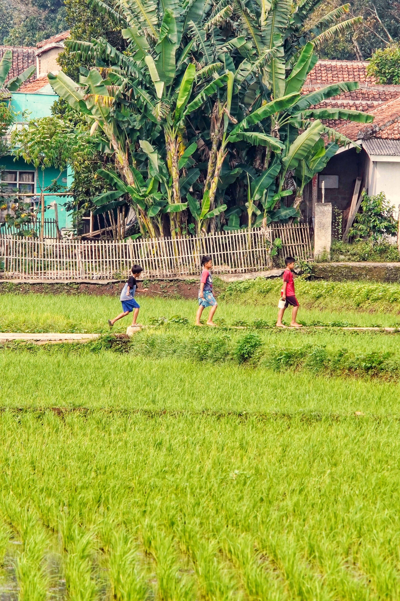
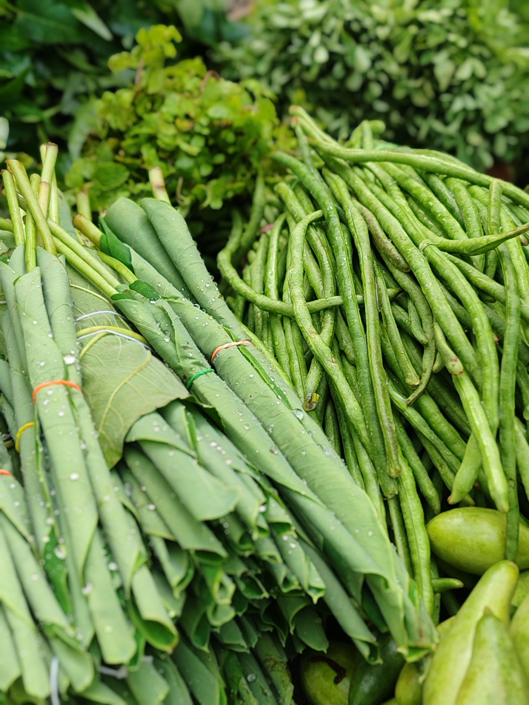
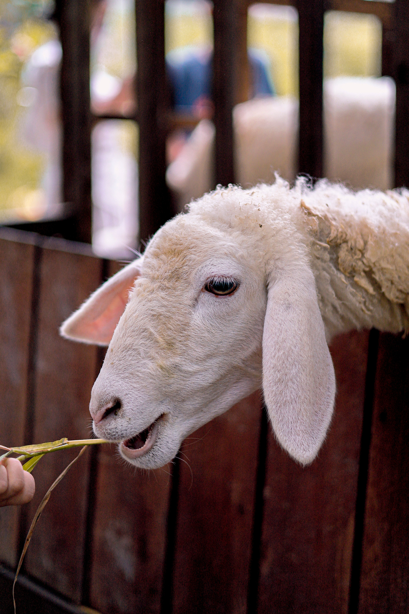
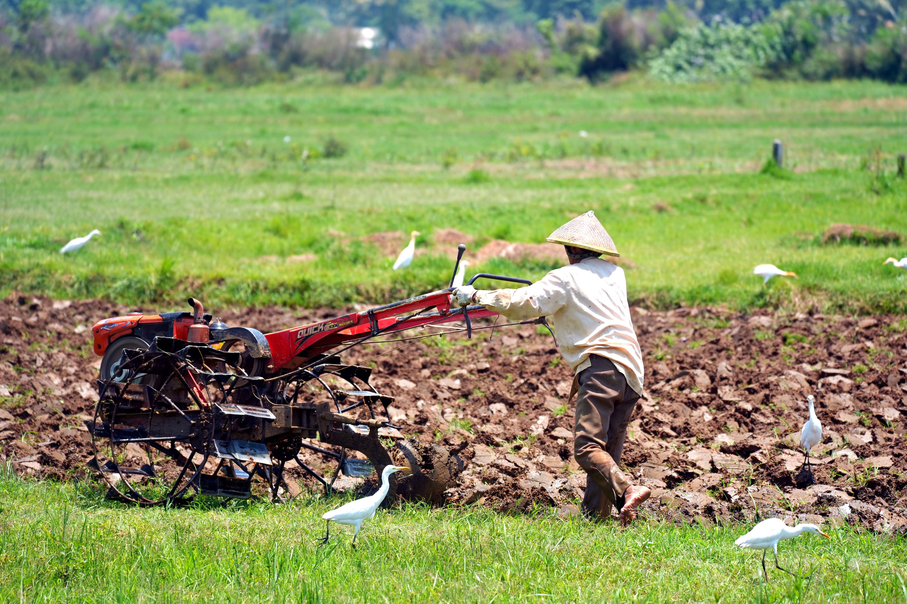

Perdagangan
Sembako
Kebutuhan pokok harian masyarakat dengan akses yang mudah dan harga yang kompetitif.
Tanyakan produk →Koperasi Desa Merah Putih menjadi wadah kolaborasi warga untuk memperkuat kebutuhan pokok, pertanian, kesehatan, pembiayaan, dan usaha masyarakat.

Satukan potensi pertanian, peternakan, UMKM, dan sumber daya desa.





Sesuaikan daftar layanan berikut dengan unit usaha yang benar-benar tersedia di koperasi Anda.
Kebutuhan pokok harian masyarakat dengan akses yang mudah dan harga yang kompetitif.
Tanyakan produk →
Mendukung petani memperoleh sarana produksi pertanian sesuai kebutuhan musim tanam.
Tanyakan stok →
Layanan pembiayaan anggota dengan tata kelola yang transparan dan sesuai ketentuan.
Konsultasi →
Akses kebutuhan farmasi masyarakat melalui unit layanan kesehatan koperasi.
Hubungi apotek →
Gunakan foto dan identitas resmi pengurus agar masyarakat dapat mengenali pengelola koperasi.


Statistik anggota nasional harus diambil dari sumber resmi/API agar angka yang ditampilkan benar-benar aktual. Template ini sudah menyiapkan tempat untuk data tersebut.
Dokumentasikan sektor yang menjadi kekuatan utama wilayah dan jelaskan kontribusi koperasi.

Koperasi dapat membantu akses pakan, sarana produksi, pembiayaan, hingga pemasaran hasil ternak.

Pengadaan input pertanian dan pemasaran bersama membantu meningkatkan efisiensi.

Promosi, distribusi, pembiayaan, dan akses pasar dapat dikonsolidasikan melalui koperasi.

Aktivitas ekonomi lokal menciptakan perputaran nilai dan membuka peluang usaha baru.
Jl. Lapang bola Mandala Wadas, Desa Karangtanjung, Kecamatan Lemahabang, Kabupaten Karawang.
Ganti tautan sosial media dan nomor berikut dengan akun resmi koperasi desa Anda.